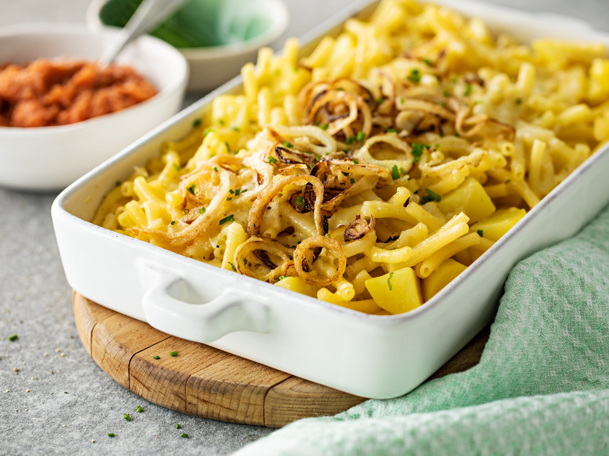
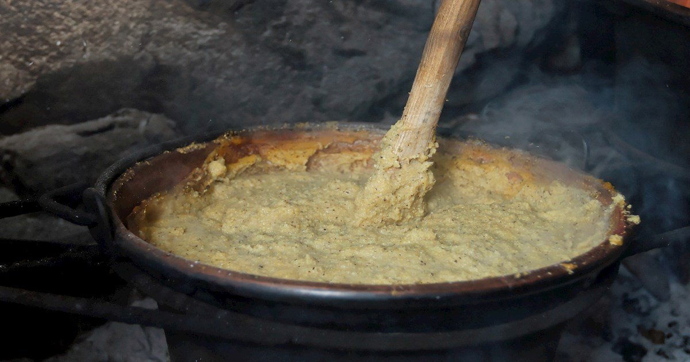
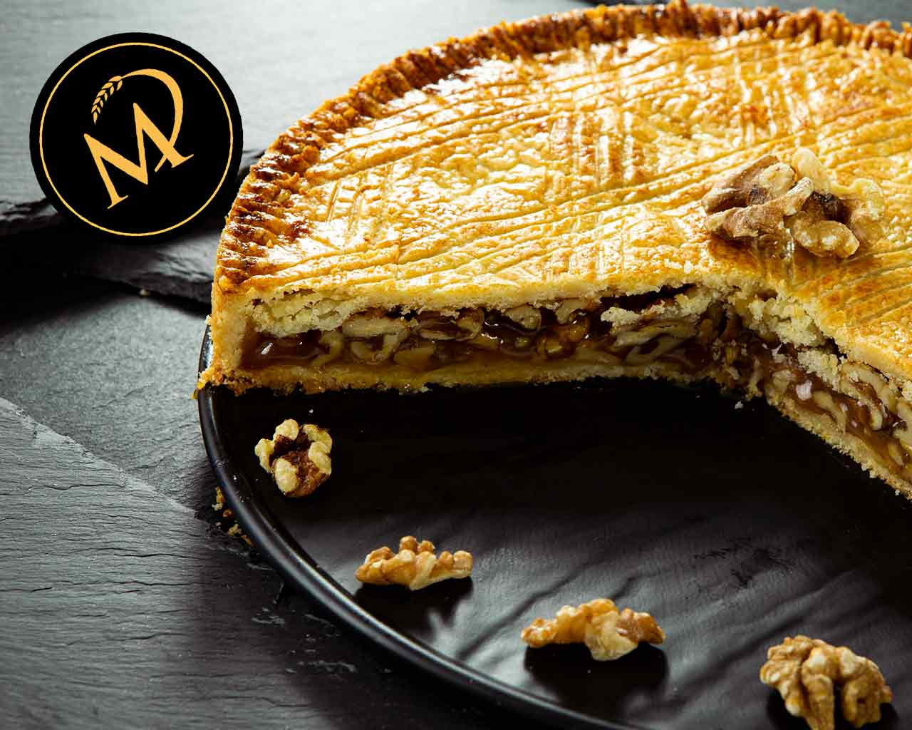
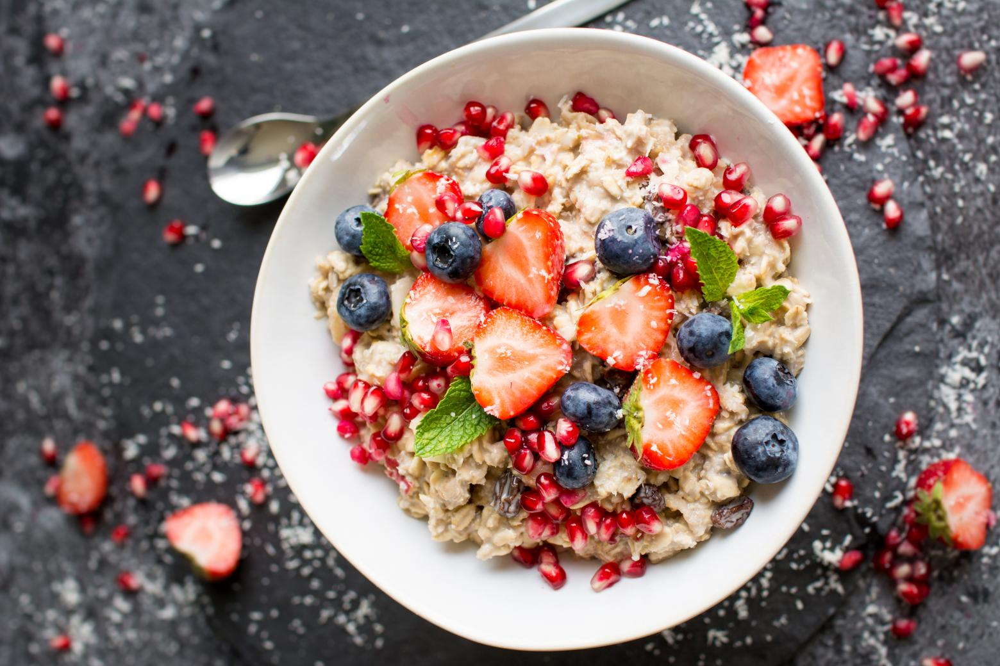
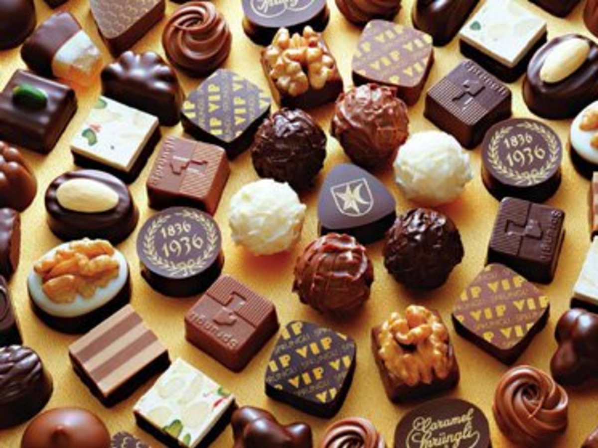
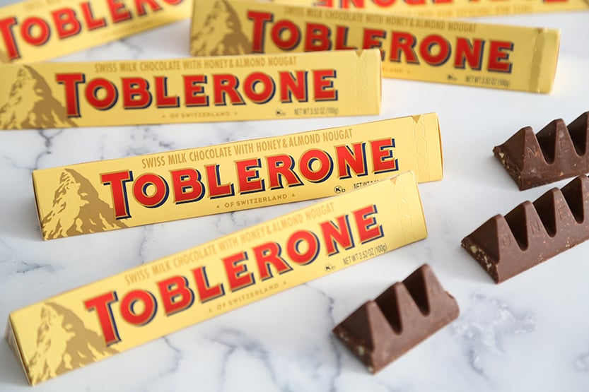

The Heart of Alpine Cuisine
Swiss cuisine is a delightful reflection of the country's diverse cultural landscape, drawing significant influences from its neighbors: Germany, France, and Italy. As a result, Swiss food is a fascinating mosaic of hearty mountain comfort, refined flavors, and sunny Mediterranean ingredients, all tied together by world-famous Swiss cheese and chocolate.
Iconic National Comfort Foods
1. Cheese Fondue
The ultimate communal dish. Fondue is a pot of melted cheese (typically Gruyère and Vacherin Fribourgeois) mixed with white wine, garlic, and a splash of Kirsch.

- How to Eat: Dip cubes of crusty bread using long forks.
- Pairing: Dry white wine or hot tea.
2. Raclette
More than a meal, it's an experience. Raclette involves melting a block or slices of Raclette cheese and scraping the soft, melted layer onto boiled potatoes.

- Accompaniments: Pickled onions, gherkins, and cured meats.
- Origin: Canton of Valais.
3. Rösti
A crispy, fried potato cake made from coarsely grated potatoes, often served as a side dish or main course.

- German-Swiss Staple: Historically a breakfast dish of Bernese farmers.
- Variations: Often topped with fried eggs, bacon, or melted cheese.
4. Zürcher Geschnetzeltes
Thinly sliced veal cooked in a creamy white wine and mushroom sauce.

- Serving Suggestion: Traditionally served with crispy Rösti or rice.
- Region: Zurich.
Regional Specialties & Sweet Delights
Älplermagronen (Alpine Macaroni)
A Swiss macaroni and cheese variation with pasta, potatoes, cream, cheese, and caramelized onions.
Ticinese Polenta & Risotto
In Ticino, polenta and saffron risotto are staples served with sausages or stews.
Bündner Nusstorte
A rich walnut tart from Graubünden with caramelized sugar and cream.
Birchermüesli
A Swiss dish of rolled oats, nuts, grated fruit, and milk or yogurt.
Chocolate and Cheese
Switzerland produces hundreds of cheeses and world-famous milk chocolate.





